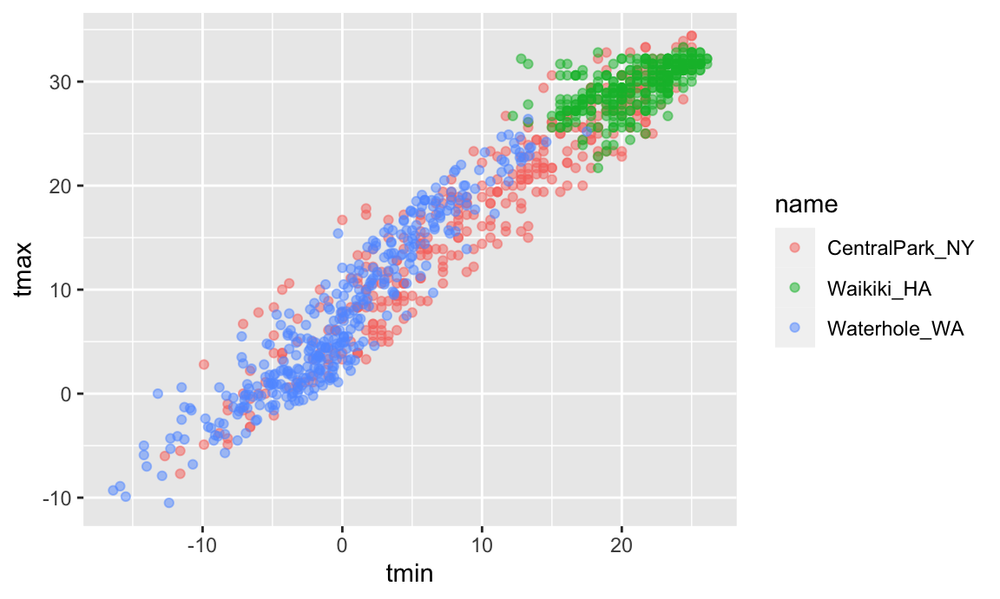

Visualization with ggplot2
Part 2
Good visualization is a critical step in data analysis.
This is the second module in the Visualization and EDA topic. Note that the slides and Other Materials / Extra Reading is the same as in Visualization Pt 1.
Overview
Learning Objectives
Create effective graphics using ggplot and implement best practices for effective graphical communication.
Video Lecture
Example
I’ll create a new .Rmd for this example, and include it in the Git repo / directory for the Visualization and EDA topic. I’m also going to take advantage of features in the tidyverse and patchwork packages, so I’ll load those next.
library(tidyverse)
## ── Attaching packages ──────────────────────────────────────────────────────────────────────────────── tidyverse 1.3.0 ──
## ✓ ggplot2 3.3.2 ✓ purrr 0.3.4
## ✓ tibble 3.0.3 ✓ dplyr 1.0.2
## ✓ tidyr 1.1.2 ✓ stringr 1.4.0
## ✓ readr 1.3.1 ✓ forcats 0.5.0
## ── Conflicts ─────────────────────────────────────────────────────────────────────────────────── tidyverse_conflicts() ──
## x dplyr::filter() masks stats::filter()
## x dplyr::lag() masks stats::lag()
library(patchwork)We’ll still work with NOAA weather data, which is loaded using the same code as in Visualization Pt 1.
weather_df =
rnoaa::meteo_pull_monitors(
c("USW00094728", "USC00519397", "USS0023B17S"),
var = c("PRCP", "TMIN", "TMAX"),
date_min = "2017-01-01",
date_max = "2017-12-31") %>%
mutate(
name = recode(
id,
USW00094728 = "CentralPark_NY",
USC00519397 = "Waikiki_HA",
USS0023B17S = "Waterhole_WA"),
tmin = tmin / 10,
tmax = tmax / 10) %>%
select(name, id, everything())
## Registered S3 method overwritten by 'hoardr':
## method from
## print.cache_info httr
## using cached file: /Users/jeffgoldsmith/Library/Caches/R/noaa_ghcnd/USW00094728.dly
## date created (size, mb): 2020-09-25 14:56:47 (7.519)
## file min/max dates: 1869-01-01 / 2020-09-30
## using cached file: /Users/jeffgoldsmith/Library/Caches/R/noaa_ghcnd/USC00519397.dly
## date created (size, mb): 2020-09-25 14:56:52 (1.699)
## file min/max dates: 1965-01-01 / 2020-03-31
## using cached file: /Users/jeffgoldsmith/Library/Caches/R/noaa_ghcnd/USS0023B17S.dly
## date created (size, mb): 2020-09-25 14:56:54 (0.877)
## file min/max dates: 1999-09-01 / 2020-09-30
weather_df
## # A tibble: 1,095 x 6
## name id date prcp tmax tmin
## <chr> <chr> <date> <dbl> <dbl> <dbl>
## 1 CentralPark_NY USW00094728 2017-01-01 0 8.9 4.4
## 2 CentralPark_NY USW00094728 2017-01-02 53 5 2.8
## 3 CentralPark_NY USW00094728 2017-01-03 147 6.1 3.9
## 4 CentralPark_NY USW00094728 2017-01-04 0 11.1 1.1
## 5 CentralPark_NY USW00094728 2017-01-05 0 1.1 -2.7
## 6 CentralPark_NY USW00094728 2017-01-06 13 0.6 -3.8
## 7 CentralPark_NY USW00094728 2017-01-07 81 -3.2 -6.6
## 8 CentralPark_NY USW00094728 2017-01-08 0 -3.8 -8.8
## 9 CentralPark_NY USW00094728 2017-01-09 0 -4.9 -9.9
## 10 CentralPark_NY USW00094728 2017-01-10 0 7.8 -6
## # … with 1,085 more rowsAs a starting point, let’s revisit the scatterplot of tmax against tmin made in Visualization Pt 1.
weather_df %>%
ggplot(aes(x = tmin, y = tmax)) +
geom_point(aes(color = name), alpha = .5)
## Warning: Removed 15 rows containing missing values (geom_point).
Labels
There are a variety of useful ways to change the appearance of your plot, especially if your graphic is intended to be viewed by others. One of the most important things you can do is provide informative axis labels, plot titles, and captions, all of which can be controlled using labs().
weather_df %>%
ggplot(aes(x = tmin, y = tmax)) +
geom_point(aes(color = name), alpha = .5) +
labs(
title = "Temperature plot",
x = "Minimum daily temperature (C)",
y = "Maxiumum daily temperature (C)",
caption = "Data from the rnoaa package"
)
## Warning: Removed 15 rows containing missing values (geom_point).Scales
Aesthetic mappings determine which variables map to which plot attributes. These mappings have reasonable default behaviors, but can be modified through scales.
For example, you’ll occasionally want control over the location and specification of tick marks on the X or Y axis. These can be manipulated in scale_x_* and scale_y_* where * depends on the type of variable mapped to the x and y aesthetics (i.e. continuous vs discrete).
weather_df %>%
ggplot(aes(x = tmin, y = tmax)) +
geom_point(aes(color = name), alpha = .5) +
labs(
title = "Temperature plot",
x = "Minimum daily temperature (C)",
y = "Maxiumum daily temperature (C)",
caption = "Data from the rnoaa package") +
scale_x_continuous(
breaks = c(-15, 0, 15),
labels = c("-15º C", "0", "15"))
## Warning: Removed 15 rows containing missing values (geom_point).There are a variety of other scale_x_* and scale_y_* options – it can be helpful to know how and where these are controlled, although I usually would have to google how to do what I want.
weather_df %>%
ggplot(aes(x = tmin, y = tmax)) +
geom_point(aes(color = name), alpha = .5) +
labs(
title = "Temperature plot",
x = "Minimum daily temperature (C)",
y = "Maxiumum daily temperature (C)",
caption = "Data from the rnoaa package") +
scale_x_continuous(
breaks = c(-15, 0, 15),
labels = c("-15ºC", "0", "15"),
limits = c(-20, 30)) +
scale_y_continuous(
trans = "sqrt",
position = "right")
## Warning in self$trans$transform(x): NaNs produced
## Warning: Transformation introduced infinite values in continuous y-axis
## Warning: Removed 90 rows containing missing values (geom_point).For many graph options there are several ways to produce the desired result, and you should feel free to use whichever is most convenient. For instance, scale_y_sqrt() can be added to a ggplot object to transform the Y scale, and xlim() can be used to control the plot limits in the X axis.
Analogously to scale_x_* and scale_y_*, there are scales corresponding to other aestheics. Some of the most common are used to control the color aesthetic. For example, arguments to scale_color_hue() control the color scale and the name in the plot legend.
weather_df %>%
ggplot(aes(x = tmin, y = tmax)) +
geom_point(aes(color = name), alpha = .5) +
labs(
title = "Temperature plot",
x = "Minimum daily temperature (C)",
y = "Maxiumum daily temperature (C)",
caption = "Data from the rnoaa package") +
scale_color_hue(name = "Location", h = c(100, 300))
## Warning: Removed 15 rows containing missing values (geom_point).Trying to create your own color scheme usually doesn’t go well; I encourage you to use the viridis package instead. There are several options, but the default color scheme works nicely!
ggp_temp_plot =
weather_df %>%
ggplot(aes(x = tmin, y = tmax)) +
geom_point(aes(color = name), alpha = .5) +
labs(
title = "Temperature plot",
x = "Minimum daily temperature (C)",
y = "Maxiumum daily temperature (C)",
caption = "Data from the rnoaa package"
) +
viridis::scale_color_viridis(
name = "Location",
discrete = TRUE
)
ggp_temp_plot
## Warning: Removed 15 rows containing missing values (geom_point).We used discrete = TRUE because the color aesthetic is mapped to a discrete variable. In other cases (for example, when color mapped to prcp) you can omit this argument to get a continuous color gradient. The viridis::scale_fill_viridis() function is appropriate for the fill aesthetic used in histograms, density plots, and elsewhere.
Themes
Themes are used to modify non-data elements of a plot – they don’t change mappings or how data are render, but control things like background color and location of the the legend. Using themes can help with general plot appearance.
For example, I frequently change is the legend position. By default this is on the right of the graphic, but I like to shift it to the bottom to ensure the graphic takes up the available left-to-right space.
ggp_temp_plot +
theme(legend.position = "bottom")
## Warning: Removed 15 rows containing missing values (geom_point).Quick tip: legend.position = "none" will remove the legend. This is helpful when multiple plots use the same color scheme or when the legend is obnoxious for some other reason.
While you can manage specific theme elements individually, I recommend using a built-in theme. By default this is theme_gray; here’s theme_bw():
ggp_temp_plot +
theme_bw() +
theme(legend.position = "bottom")
## Warning: Removed 15 rows containing missing values (geom_point).… and here’s theme_classic():
ggp_temp_plot +
theme_classic() +
theme(legend.position = "bottom")
## Warning: Removed 15 rows containing missing values (geom_point).… and, for some reason, here’s the Excel 2003 theme from ggthemes:
ggp_temp_plot +
ggthemes::theme_excel() +
theme(legend.position = "bottom")
## Warning: Removed 15 rows containing missing values (geom_point).Don’t use the Excel 2003 theme (the first two are fine, and ggthemes has other very nice themes as well).
The ordering of theme_bw() and theme() matters – theme() changes a particular element of the plot’s current “theme”. If you call theme to change the some element and then theme_bw(), the changes introduced by theme() are overwritten by theme_bw().
Learning Assessment: Revisit the plot showing tmax against date for each location. Use labels, scale options, and theme changes to improve the readability of this plot.
Solution
One possible plot is shown below.
ggplot(weather_df, aes(x = date, y = tmax, color = name)) +
geom_smooth(se = FALSE) +
geom_point(aes(size = prcp), alpha = .75) +
labs(
title = "Temperature plot",
x = "Date",
y = "Maxiumum daily temperature (C)",
caption = "Data from the rnoaa package"
) +
viridis::scale_color_viridis(discrete = TRUE) +
theme_minimal() +
theme(legend.position = "bottom")
## `geom_smooth()` using method = 'loess' and formula 'y ~ x'
## Warning: Removed 3 rows containing non-finite values (stat_smooth).
## Warning: Removed 3 rows containing missing values (geom_point).
Setting options
In addition to figure sizing, I include a few other figure preferences in global options declared at the outset of each .Rmd file (this code chunk just gets copy-and-pasted to the beginning of every new file).
library(tidyverse)
knitr::opts_chunk$set(
fig.width = 6,
fig.asp = .6,
out.width = "90%"
)
theme_set(theme_minimal() + theme(legend.position = "bottom"))
options(
ggplot2.continuous.colour = "viridis",
ggplot2.continuous.fill = "viridis"
)
scale_colour_discrete = scale_colour_viridis_d
scale_fill_discrete = scale_fill_viridis_dThere are ways to set color preferences globally as well (for example, to use viridis color palettes everywhere, all the time, without setting these options in your RMarkdown file), although they’re a bit more involved.
Data argument in geom_*
We’ve seen that where an aesthetic gets mapped to a variable matters – setting aes(color = name) in ggplot can yield different results than the same setting in geom_point(). This arises from the way that ggplot objects inherit aesthetic mappings, and it turns out there’s a similar thing with the data used to make a plot.
In a contrived example, we can split weather_df into separate datasets for Central Park and Waikiki. Then we use one in the ggplot() call and another in geom_line():
central_park =
weather_df %>%
filter(name == "CentralPark_NY")
waikiki =
weather_df %>%
filter(name == "Waikiki_HA")
ggplot(data = waikiki, aes(x = date, y = tmax, color = name)) +
geom_point() +
geom_line(data = central_park)
## Warning: Removed 3 rows containing missing values (geom_point).More realistically, it’s sometimes necessary to overlay data summaries on a plot of the complete data. Depending on the setting, one way to do this is to create a “summary” dataframe and use that when adding a new geom to a ggplot based on the full data.
patchwork
We’ve seen facetting as an approach to create the “same plot” for several levels of a categorical variable, and this can get you pretty far. Sometimes, though, you want to show two or three fundamentally different plots in the same graphic: you may want to juxtapose a scatterplot and a boxplot, or show scatterplots illustrating relationships between different variables. In this case, a solution is to create each of the panels you want separately and combine panels using tools in the patchwork package:
tmax_tmin_p =
weather_df %>%
ggplot(aes(x = tmax, y = tmin, color = name)) +
geom_point(alpha = .5) +
theme(legend.position = "none")
prcp_dens_p =
weather_df %>%
filter(prcp > 0) %>%
ggplot(aes(x = prcp, fill = name)) +
geom_density(alpha = .5) +
theme(legend.position = "none")
tmax_date_p =
weather_df %>%
ggplot(aes(x = date, y = tmax, color = name)) +
geom_point(alpha = .5) +
geom_smooth(se = FALSE) +
theme(legend.position = "bottom")
(tmax_tmin_p + prcp_dens_p) / tmax_date_p
## Warning: Removed 15 rows containing missing values (geom_point).
## `geom_smooth()` using method = 'loess' and formula 'y ~ x'
## Warning: Removed 3 rows containing non-finite values (stat_smooth).
## Warning: Removed 3 rows containing missing values (geom_point).The package is already very helpful but is under active development – some features may change or be added over time – so check the package webstie periodically to stay up-to-date. This does require some amount of work for each panel, and you should keep in mind that this is intended to help combine panels into a plot that couldn’t be created better using data tidying steps.
Data Manipulation
Often, struggles with ggplot are struggles with data tidying in disguise. Viewing data manipulation as part of the visualization process will often be your path to success! Put differently, the behavior of your plot depends on the data you’ve supplied; in some cases, it’s easier to control behavior through data manipulation than it is through the plot code.
This is particularly true for the order of categorical or factor variables in plots. Categorical variables will be ordered alphabetically; factors will follow the specified order level that underlies the variable labels. You can change the order level of a factor variable to your specified preference using forcats::fct_relevel or according to the value of another variable using forcats::fct_reorder.
A first example reorders name “by hand”:
weather_df %>%
mutate(name = forcats::fct_relevel(name, c("Waikiki_HA", "CentralPark_NY", "Waterhole_WA"))) %>%
ggplot(aes(x = name, y = tmax)) +
geom_violin(aes(fill = name), color = "blue", alpha = .5) +
theme(legend.position = "bottom")
## Warning: Removed 3 rows containing non-finite values (stat_ydensity).A second example reorders name according to tmax values in each name:
weather_df %>%
mutate(name = forcats::fct_reorder(name, tmax)) %>%
ggplot(aes(x = name, y = tmax)) +
geom_violin(aes(fill = name), color = "blue", alpha = .5) +
theme(legend.position = "bottom")
## Warning: Removed 3 rows containing non-finite values (stat_ydensity).We’ll learn more about the forcats package in Data Wrangling II.
A more difficult situation relates to data tidyiness. Suppose I wanted to create a three-panel plot showing densities for tmax and tmin within each location. More concretely, I want to be able to facet panels across the name variable, and create separate densities for tmax and tmin in each panel. Unfortunately, weather_df isn’t organized in a way that makes this easy.
One solution would recognize that tmax and tmin are separate observation types of a shared temperature variable. With this understanding, it’s possible to tidy the weather_df and make the plot directly:
weather_df %>%
select(name, tmax, tmin) %>%
pivot_longer(
tmax:tmin,
names_to = "observation",
values_to = "temp") %>%
ggplot(aes(x = temp, fill = observation)) +
geom_density(alpha = .5) +
facet_grid(~name) +
viridis::scale_fill_viridis(discrete = TRUE)
## Warning: Removed 18 rows containing non-finite values (stat_density).Our emphasis on data tidiness in previous examples is helpful in visualization. The code below imports and tidies the PULSE data, and creates a plot showing BDI score across visits. Some steps that are helpful in retrospect are using pivot_longer to organize the BDI score and visit time variables, and organizing the visit time variable into a factor with an informative ordering.
pulse_data =
haven::read_sas("./data/public_pulse_data.sas7bdat") %>%
janitor::clean_names() %>%
pivot_longer(
bdi_score_bl:bdi_score_12m,
names_to = "visit",
names_prefix = "bdi_score_",
values_to = "bdi") %>%
select(id, visit, everything()) %>%
mutate(
visit = recode(visit, "bl" = "00m"),
visit = factor(visit, levels = str_c(c("00", "01", "06", "12"), "m"))) %>%
arrange(id, visit)
ggplot(pulse_data, aes(x = visit, y = bdi)) +
geom_boxplot()
## Warning: Removed 879 rows containing non-finite values (stat_boxplot).As a final example, we’ll revisit the FAS data. We’ve seen code for data import and organization and for joining the litters and pups data. Here we add some data tidying steps to view pup-level outcomes (post-natal day on which ears “work”, on which the pup can walk, etc) across values of dose category and treatment day.
pup_data =
read_csv("./data/FAS_pups.csv", col_types = "ciiiii") %>%
janitor::clean_names() %>%
mutate(sex = recode(sex, `1` = "male", `2` = "female"))
litter_data =
read_csv("./data/FAS_litters.csv", col_types = "ccddiiii") %>%
janitor::clean_names() %>%
separate(group, into = c("dose", "day_of_tx"), sep = 3)
fas_data = left_join(pup_data, litter_data, by = "litter_number")
fas_data %>%
select(sex, dose, day_of_tx, pd_ears:pd_walk) %>%
pivot_longer(
pd_ears:pd_walk,
names_to = "outcome",
values_to = "pn_day") %>%
drop_na() %>%
mutate(outcome = forcats::fct_reorder(outcome, pn_day, median)) %>%
ggplot(aes(x = dose, y = pn_day)) +
geom_violin() +
facet_grid(day_of_tx ~ outcome)The PULSE and FAS examples involve some fairly complex import, tidying, and plotting steps. They aren’t intended to be daunting, but rather to illustrate how closely linked the steps in this process are and to emphasize the need for proficiency in data wrangling tools when conducting exploratory analyses.
Other materials
Oh man is there a lot of stuff about visualization …
- There are overviews on good and bad graphics
- Including an early paper on “How to display data badly”
- Karl Broman’s top ten worst graphs
- … and Karl’s talk on creating effective figures and table
- Also Hadley Wickham’s paper on the philosophy underlying
ggplot
- There are tutorials on making graphics using
ggplot- The ggplot2 book
- From R for Data Science: basics and advanced stuff
- Jenny Bryan’s intro to ggplot and her ggplot tutorial (with a video presentation of the ggplot2 tutorial slides)
- From R Programming for Research
- The Graphs chapter in the R Cookbook by Winston Chang
- … and his R Graphics Cookbook
- And, of course, a cheatsheet
- There are arguments about ggplot vs base R graphics
The code that I produced working examples in lecture is here.